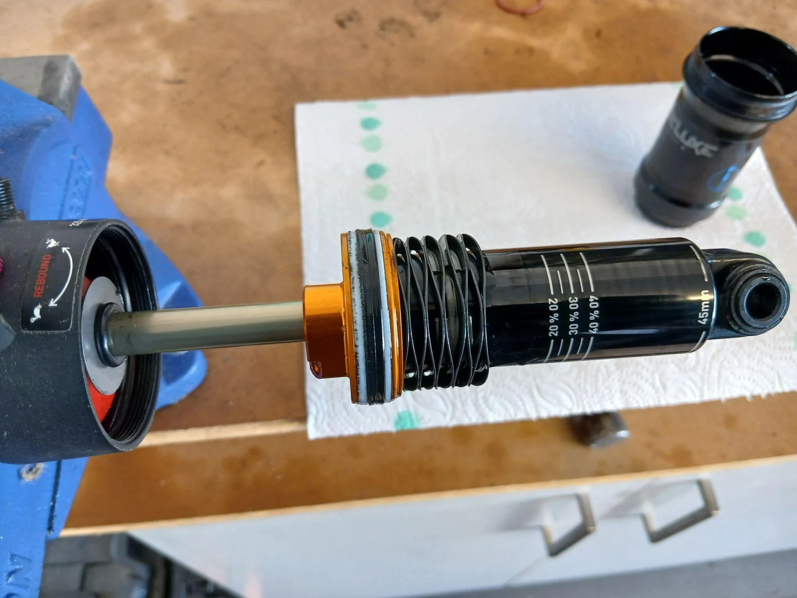
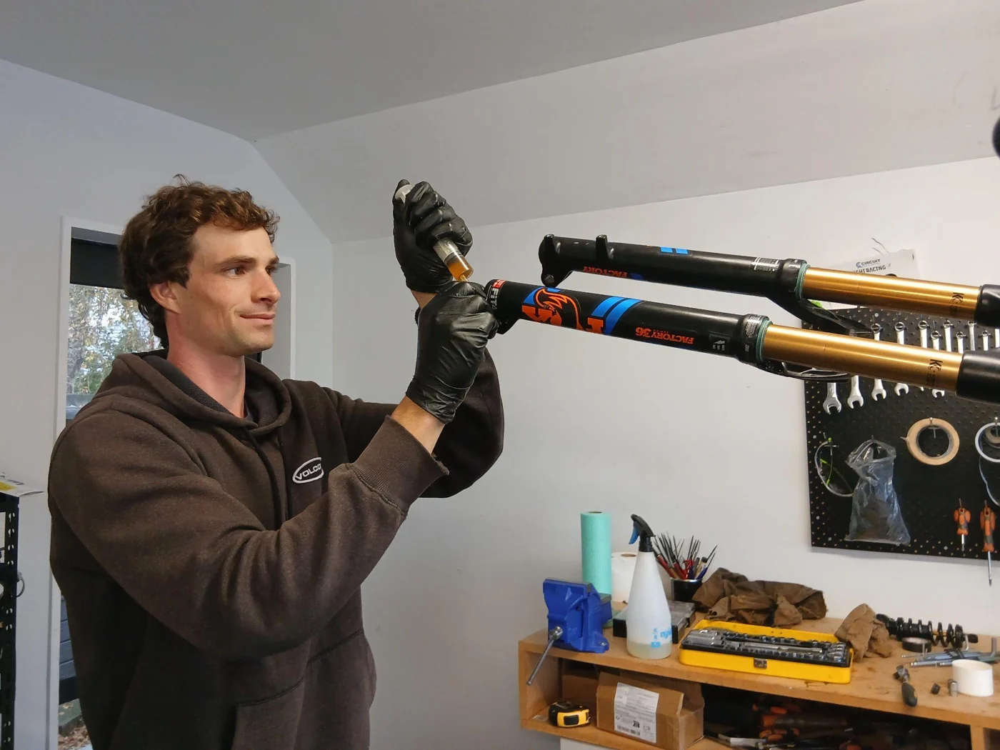

Suspension
Suspension Servicing: What, Why and When
What suspension servicing involves, why it matters and when to book it in.
Read articleFrom the workshop

Suspension
What suspension servicing involves, why it matters and when to book it in.
Read article
Servicing
A closer look at the three service packages, from a General Service to an MTB Full Overhaul.
Read article